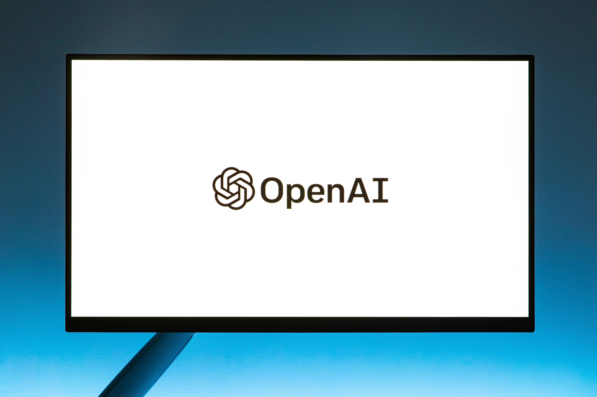

Artificial Intelligence
What is Artificial Intelligence?
AI is the ability of a machine to perform cognitive functions as humans do, such as perceiving, learning, reasoning and solving problems. AI provides a cutting-edge technology to deal with complex data which is near to impossible to handle by a human being. AI automates redundant jobs, allowing a worker to focus on the high level, strategic, value-adding tasks. When AI is implemented at scale, it leads to cost reduction and revenue increase.
What are the types of AI?
Reactive Machines
These types of machines can only give responses from a contained set of inputs. They don’t improve their responses based on new data or their memory as they also don’t have memory based functionality.
Limited Memory
This technology takes reactive machines but adds the previously missing data of learning from past / inputted data to make choices. The AI that we have become accustomed to today uses this to make decisions. One of the biggest examples of this is AI image recognition. This uses thousands of images to identify objects that it scans, so it’s able to label the object with increasing accuracy.
Theory of Mind
This type of AI is more focusing on understanding more ‘human’ concepts such as emotions, thoughts, and beliefs. Today, theory of mind is still a very broad research topic, and is still a concept that researchers have been unable to make possible.
Self-Aware
This type of AI is the most human-like type of technology, as it would be able to have its own thoughts, feelings, emotions and beliefs. It would be able to interact with people as people do. However, this type of technology is still very very far from actually being developed. As Limited Memory is still the fore-runner for AI, there is still a long way to go before Self-Aware AI comes into play.

What is AI used for?
1.Maps and Navigation
Before the 21st century, satellite-based GPS was the only way for navigation aside from paper maps. Now Google or even apple maps can give directions with a few clicks. As AI is used throughout the system to determine roads, where traffic lights are and even traffic, GPS isn’t used as frequently or on demand. Instead the machine learning, and algorithms, along with the images that come with an app like google maps has all been made possible from the use of AI. Not to mention the AI that's integrated for calculating traffic, as it changes throughout the day. It takse in data from the posted speed roads, how fast the cars that are using google maps are going, and uses data to calculate the optimal route for you with the least amount of traffic.

2. Facial Detection and Recognition
Ever think about how you can use facial recognition to unlock your phone, or how filters can be put onto our faces when using apps like snapchat or instagram? AI has the ability to make the choices based on photos you’ve uploaded to your phone, and determine whether you’re a match or not. Face detection is also used for many other purposes including surveillance, and even security by government agencies, private companies, and especially airports.
3. Text Editors or Autocorrect
Grammarly, and other tools to correct grammar, or to rephrase a sentence is also AI. Through the development of machine and deep learning algorithms along with natural language processing, apps are now able to identify spelling issues, grammar, and even re-write your entire sentence. It can catch incorrectly used characters like commas that are where they shouldn’t be, and dashes that don’t make sense. Thousands of people use these tools for papers, research, and documentation, making the applications of AI more used, and needed than ever.
4. Chatbots
Chatbots are an all time favourite when it comes to companies trying to cut back expenses on customer service. They are found on many websites, and are now a requirement for larger companies. These chatbots are able to answer FAQs, take orders, and calls, while keeping track of their progress. Are able to imitate normal conversations to replicate customer service. In fact, Chatbots have become so advanced that they can answer complex, long questions without the answer of yes or no. Instead, they are able to give proper answers that customers can get faster in comparison to regular customer service. They can change their answer when you tell it that their answer isn’t the one you’re looking for, and chatbots have a wide range of answers and capabilities, increasing overall client satisfaction.
5. Social Media
Instagram, Snapchat, Facebook and many other applications use AI. They can be used to scan content, make connection suggestions, make certain ads pop up based on your roaming, and what you’ve been clicking, or spending more time looking at. AI is one of the biggest contributors to the addictive aspect of social media, and this is due to its keyword intelligence, and image recognition, as it is able to send more items, more images, and more videos to keep customers engaged in their app. It uses neural network architecture, and deep learning to fully understand what to recommend to users. And this technique has worked for the past few years very well, as social media apps, such as Instagram, SnapChat, and the most recent addictive app TikTok, make billions of dollars each year.

What Careers fall under AI?
A1. Artificial intelligence (AI) engineer
They help to develop systems, tools, and other processes so that AI can be applied to the real world. AI Engineers use these tools for machine learning and existing AI to improve and become more efficient. This is an example of Limited Memory as the algorithms are typically adapting with new data and are always improving. These engineers help to reduce costs, and increase productivity, profits, and business of their company.
2. Machine learning engineer
These are the engineers that research, develop, and update AI for machine learning. Machine Learning Engineers also communicate with other data scientists regularly to improve their systems and further develop AI systems, and models for AI. Together they create experiments and tests, run statistical analyses, and create machine learning systems. The average salary for Machine Learning Engineers is around $125,087 annually.
3. Robotics engineer
They are seen in multiple industries for the development of robotic applications. They develop products for testing and their applications in real world products and scenarios. Some industries they are found in include: automotive, manufacturing, defense, and even medicine. This career is seen as a merge of mechanical and electrical engineering with the robotics elements and complete with a touch of computer science for the integration of AI powered devices. Their typical annual salary is around $101, 062.

4. Software engineer
Software engineers have a very broad range of careers to pick from as code can be applicable in so many different forms. However, in the AI category, you may be hired to develop programs that are self-learning. The main role of Software Engineers is to make these systems more efficient with AI as they solve many problems, and are constantly improving already existing systems. The average salary is around $107, 169 annually.
5. Data scientist
These scientists are the ones that help guide teams by figuring out what questions and solutions need to be addressed, and how to use the data given by other engineers in the project to better the solutions. They predict outcomes and patterns by creating models and sometimes use machine learning to help refine their work and the overall company technology. The average salary is around $126, 575 annually.
SOURCES:
Joshi, N. (2022, August 30). 7 Types Of Artificial Intelligence. Forbes.com. Retrieved July 19, 2023, from https://www.forbes.com/sites/cognitiveworld/2019/06/19/7-types-of-artificial-intelligence/?sh=743627f0233e
Coursera. (2023, June 16). 6 Artificial Intelligence (AI) Jobs to Consider in 2023. Coursera. Retrieved July 19, 2023, from https://www.coursera.org/articles/artificial-intelligence-jobs
Reeves, S. (n.d.). 8 Helpful Everyday Examples of Artificial Intelligence. IoT For All. Retrieved July 19, 2023, from https://www.iotforall.com/8-helpful-everyday-examples-of-artificial-intelligence